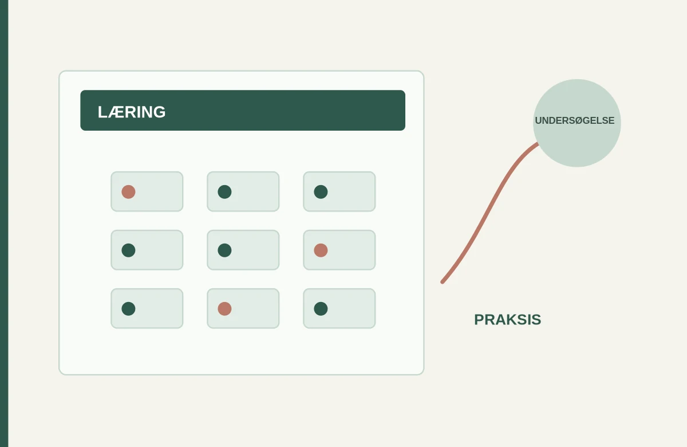
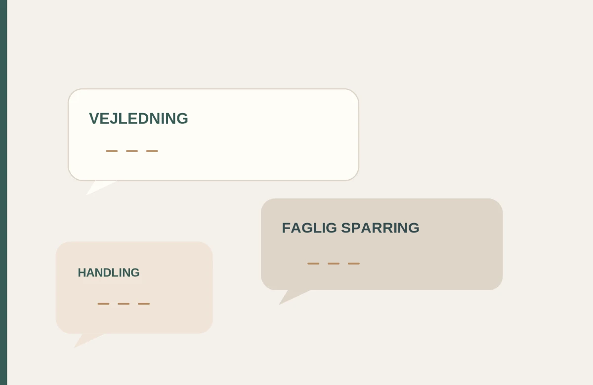
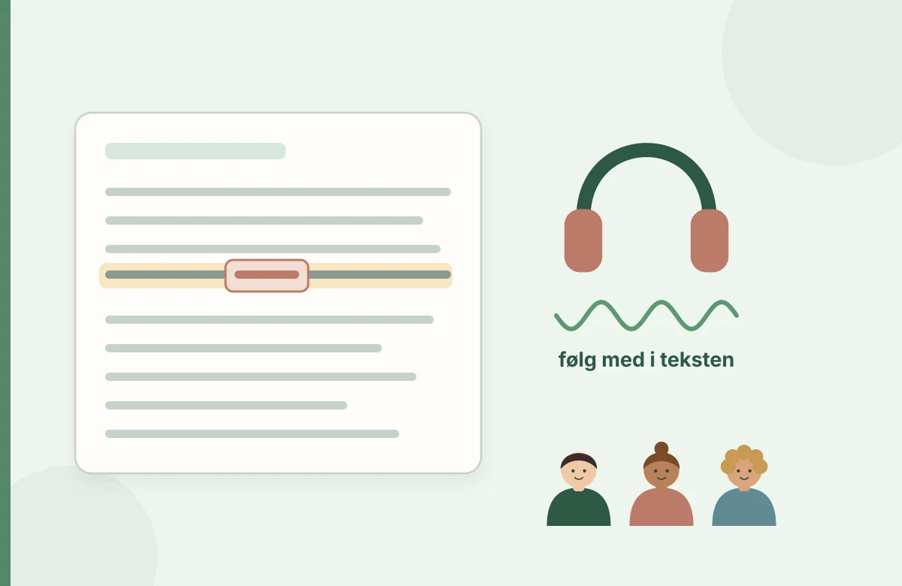

Læs og vurder faglig viden
Undersøg forskningsartiklers spørgsmål, metode, resultater og rækkevidde. Træn dit blik for, hvad kilderne giver belæg for.
Undersøg en fagtekst →Læseblik er for lærerstuderende og læsevejlederstuderende. Her kan du undersøge elevens læsning, arbejde med faglige tekster og afprøve, hvad dine iagttagelser betyder for undervisning og vejledning.

Guides, analyseeksempler, interaktive øvelser og studieark, der hjælper dig fra teori og empiri til velbegrundede valg i studieopgaver, praktik og skolepraksis.
Undersøg forskningsartiklers spørgsmål, metode, resultater og rækkevidde. Træn dit blik for, hvad kilderne giver belæg for.
Undersøg en fagtekst →Få styr på problemformulering, tekstanalyse, empiri, argumentation og akademisk opgaveskrivning.
Styrk dit analysearbejde →Kobl læsevanskeligheder, didaktik, LST, motivation og psykologi til lige deltagelsesmuligheder.
Udforsk deltagelse og trivsel →Prøv interaktive cases, lydforløb, undervisningsredskaber og refleksionsark med faglig opfølgning.
Prøv Praksislab →Du kan begynde på tre måder. Vælg din uddannelse, gennemgå en faglig analyse, eller hent et studieark til den opgave, du arbejder med.
I skriveværkstedet arbejder du med: et præcist spørgsmål, et kritisk blik på kilderne, analyse med belæg og en konklusion, der faktisk følger af undersøgelsen.
Fra “ordblindhed i skolen” til en afgrænset problemstilling med sammenhæng mellem teori, empiri og metode.
Få styr på dit spørgsmålUndersøg formål, deltagere, metode og resultater, før du bruger en forskningsartikel til at begrunde din undervisning.
Læs den faglige guideSkeln mellem referat og analyse, og byg en argumentation, hvor dine konklusioner følger af materialet.
Arbejd med din opgaveGå fra en løs fortolkning til en præcis analyse med tekstbelæg, nuancer og didaktisk perspektiv.
Se et gennemarbejdet eksempelBrug analyseeksemplerne alene, sammen med din studiegruppe eller som forberedelse til vejledning.
En elev læser langsomt i en fagtekst, men følger godt med, når teksten læses højt. Hvad ved du faktisk? Hvilke andre forklaringer bør undersøges? Og hvordan skriver du det præcist i en studieopgave?
Prøv en kort interaktiv analyse med faglig feedback. Her øver du dig i at beskrive det, du ved, og begrunde dit næste skridt.
Iagttagelse: Eleven stopper ved flere længere ord.
Mulig forklaring: Ordafkodningen kan være en barriere, men andre forhold kan spille ind.
Didaktisk valg: Supplér observationen, undersøg elevens perspektiv, og afprøv relevant støtte med opfølgning.
Casen er udviklet til faglig analyse og valg af undervisning. Udredning og diagnose følger de gældende faglige procedurer.
Undersøg en elevcase med psykologisk og pædagogisk teori. Vælg en prøvehandling, afprøv et refleksionsværktøj og begrund, hvordan du vil følge op med kolleger.
Læsning skal undersøges i den sammenhæng, hvor den finder sted. Vælg det spor, der passer til din uddannelse og de spørgsmål, du arbejder med.

Lær at identificere læsevanskeligheder, analysere en undervisningssituation og begrunde dine didaktiske valg med faglige kilder.
Gå til læreruddannelsen
Fortolk test og observationer med omtanke, planlæg kollegial vejledning og evaluer indsatser i skolens hverdag.
Gå til vejledersporetEt godt fagligt valg kræver, at du kan skelne mellem det, du har observeret, og det, du endnu kun antager. Først derefter giver det mening at vælge en indsats.
Find en faglig guideHvad står der faktisk i teksten? Hvilke ord, resultater og antagelser bærer konklusionen?
Er data relevante, og hvilke andre forklaringer må du overveje?
Hvad vil du afprøve i undervisningen, og hvordan kan du undersøge, om det hjælper?
Tidlige tegn, observationer og Ordblindetestens formål. Brug oplysningerne til at formulere relevante spørgsmål og vælge næste faglige undersøgelse.
Tidlige tegnFør, under og efter læsning. Læse- og skriveteknologi (LST), begrebsarbejde og deltagelse i dansk og andre fag.
Inkluderende undervisningKollegial sparring, co-teaching, elevperspektiver, prøvehandling og opfølgning.
Læsevejlederens rolleDu får korte lektioner med browseroplæsning, en konkret problemstilling og en refleksion, der kan bruges på studiet eller i praktikken.
Otte korte lektioner, du kan få læst højt om elevobservation, testforståelse, LST, inkluderende undervisning, samarbejde og kollegavejledning.
Åbn lydforløbetLæseblik rummer aktiviteter til afkodning, stavning, læseforståelse og LST. Til hver aktivitet kan du undersøge, hvad eleven øver, hvad du kan observere, og hvordan du kan følge op i undervisningen.

Læseblik er udviklet af Mette Sølvbjerg Fuhlendorff, der er lærer, læsevejleder og fagkoordinator og har en diplomuddannelse i psykologi. Hendes erfaring med undervisning og vejledning er grundlaget for øvelser og guides, hvor studerende undersøger, argumenterer og træffer velbegrundede valg.
Mød Mette Læs om Læsebliks faglige ståstedEn faglig opgave om læsevanskeligheder, elevens stemme og kollegial opfølgning. Du arbejder med iagttagelser, mulige forklaringer og en konkret prøvehandling.
Faglige emner om læsevanskeligheder bygger blandt andet på forskning og vejledninger fra Center for Læseforskning og Undervisningsministeriet. Til opgaveskrivning henvises blandt andet til VIA Bibliotek. Se faglige kilder ved de enkelte guides.